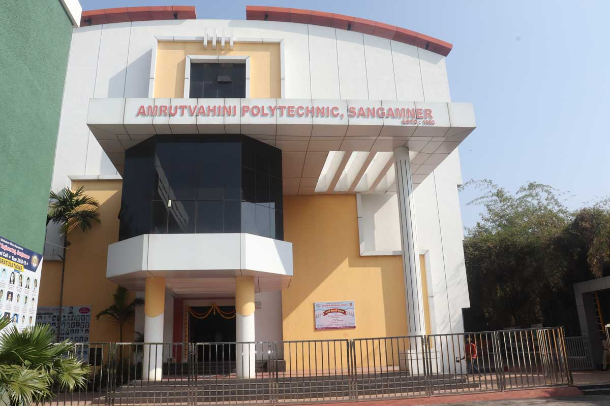

We are students of Amrutvahini Polytechnic from Information Technology Department. We have created this website as a MicroProject of create website about Documentation of programming languages. This MicroProject was given us by our superwiser of WPD subject MR. M. Kurhe Sir.

Team Members
- 45. Revgade Sarthak
- 37. Landage Nikita
- 18. Dongare Nikita
- 40. Mandle Manav
- 59. Talpade Hema
Contact Us